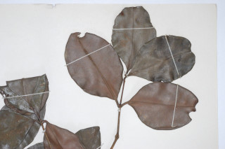
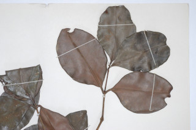

Large shrub or small trees
ದೊಡ್ಡ ಗಾತ್ರದ ಪೊದೆಗಳು ಅಥವಾ ಸಣ್ಣಮರಗಳು.
വന് കുറ്റിച്ചെടികളായോ ചെറുമരങ്ങളായോ വളരുന്നു.
பெரிய குத்துச்செடி அல்லது சிறிய மரங்கள்.
Branchlets subterete, glabrous.
ಕಿರುಕೊಂಬೆಗಳು ಉಪ-ದುಂಡಾಗಿದ್ದು ರೋಮರಹಿತವಾಗಿರುತ್ತವೆ.
അരോമിലമായ, ഏതാണ്ട് ഉരുണ്ട, ഉപശാഖകള്.
சிறிய நுனிக்கிளைகள் குறுக்குவெட்டுத் தோற்றத்தில் சிறிது வளையம் போன்றது, உரோமங்களற்றது.
Leaves simple, opposite, decussate; petiole 0.5-0.7 cm, planoconvex in cross section, glabrous; lamina 14 x 7.5 cm, broadly elliptic, apex acute to acuminate or obtuse, base acute to subattenuate, margin entire, shining above, coriaceous, glabrous; midrib flat above; secondary_nerves and intramarginal_nerves obscurely visible when dry; tertiary_nerves not visible.
ಎಲೆಗಳು ಸರಳವಾಗಿದ್ದು, ಕತ್ತರಿಯಾಕಾರದ ಅಭಿಮುಖ ಜೋಡನಾ ವ್ಯವಸ್ಥೆಯ -ಲ್ಲಿರುತ್ತವೆ; ತೊಟ್ಟುಗಳು 0.5 -0.7ಸೆಂ.ಮೀ. ರೋಮರಹಿತವಾಗಿದ್ದು ಅಡ್ಡ ಸೀಳಿದಾಗ ಸಪಾಟ ಪೀನ ಮಧ್ಯದ ಆಕಾರದಲ್ಲಿರುತ್ತವೆ; ಪತ್ರಗಳು 14 X 7.5 ಸೆಂ.ಮೀ ಗಾತ್ರ ಹೊಂದಿದ್ದು ವಿಶಾಲವಾದ ಅಂಡವೃತ್ತದ ಆಕಾರದಲ್ಲಿದ್ದು ಚೂಪಾದುದರಿಂದ ಕ್ರಮೇಣ ಚೂಪಾಗುವ ಅಥವಾ ಚೂಪಲ್ಲದ ತುದಿ, ಹಾಗೂ ಚೂಪಾದುದರಿಂದ ಉಪ-ಒಳಬಾಗಿದ ಬುಡವನ್ನು ಹೊಂದಿರುತ್ತವೆ;ಅಂಚು ನಯವಾಗಿರುತ್ತದೆ;ಪತ್ರಗಳು ರೋಮರಹಿತವಾಗಿದ್ದು ಮೇಲ್ಭಾಗದಲ್ಲಿ ಹೊಳಪನ್ನು ಹೊಂದಿರುತ್ತವೆ ಮತ್ತು ತೊಗಲ್ಲನ್ನೋಲುವ ಮಾದರಿಯಲ್ಲಿರುತ್ತದೆ; ಮಧ್ಯನಾಳ ಮೇಲ್ಭಾಗದಲ್ಲಿ ಚಪ್ಪಟೆಯಾಗಿರುತ್ತದೆ;ಎರಡನೇ ದರ್ಜೆಯ ಮತ್ತು ಅಂತರ ಅಂಚಿನ ನಾಳಗಳು ಎಲೆಗಳು ಒಣಗಿದಾಗ ಮಸುಕಾಗಿ ಕಾಣುತ್ತವೆ;ಮೂರನೇ ದರ್ಜೆಯ ನಾಳಗಳು ಅಗೋಚರ.
ലഘുവായ ഇലകള്, സമ്മുഖ, ഡെക്കുസേറ്റ് ക്രമത്തിലുളളതാണ്; ഛേദത്തില് ഒരുഭാഗം പരന്നും മറുഭാഗം ഉയര്ന്നുമുളള ഘടനയുളള, അരോമിലമായ ഇലഞെട്ടിന് 0.5 സെ.മീ മുതല് 0.7 സെ.മീ വരെ നീളം; പത്രഫലകത്തിന് 14 സെ.മീ നീളവും 7.5 സെ.മീ വീതിയും, വീതിയേറിയ ദീര്ഘവൃത്താകാരവുമാണ്, പത്രാഗ്രം നിശിതം തൊട്ട് ദീര്ഘാഗ്രം വരെയോ, ഉപകോണാഗ്രമോ ആണ്, പത്രാധാരം നിശിതം തൊട്ട് ഏതാണ്ട് നേര്ത്തവസാനിക്കുന്നതുവരെയാവാം, അരികുകള് അവിഭജിതമാണ്, മുകള്ഭാഗം തിളങ്ങുന്നതാണ്, ചര്മ്മില പ്രകൃതം, അരോമിലം; മുഖ്യസിര മുകളില് പരന്നതാണ്; ദ്വിതീയ ഞരമ്പുകളും അന്തര്സീമാന്ത ഞരമ്പുകളും ഉണങ്ങുമ്പോള് അസ്പഷ്ടമായി കാണാം; ത്രിതീയ ഞരമ്പുകള് അവ്യക്തമാണ്.
இலைகள் தனித்தவை, எதிரடுக்கமானவை, குறுக்குமறுக்கமானவை; இலைக்காம்பு 0.5-0.7 செ.மீ., குறுக்குவெட்டுத் தோற்றத்தில் பிளேனோகான்வக்ஸ், உரோமங்களற்றது; இலை அலகு 14 X 7.5 செ.மீ., அகன்ற நீள்சதுர வடிவானது, அலகின் நுனி கூரியது முதல் அதிக்கூரியது அல்லது மழுங்கியவை, அலகின் தளம் கூரியது முதல் சிறிது அட்டனுவேட் போன்றது, அலகின் விளிம்பு முழுமையானது, அலகின் மேற்பரப்பு பளபளப்பானது, கோரியேசியஸ், கீழ்பரப்பு உரோமங்களற்றது; மையநரம்பு அலகின் மேற்பரப்பிற்கு சமமானது; இலை உதிரும் போது இரண்டாம் நிலை நரம்புகள் மற்றும் இண்ட்ராமார்ஜினல் (விளிம்பு நரம்பு) நரம்பும் சிறிது கண்களுக்கு புலப்படக்கூடியது; மூன்றாம் நிலை நரம்புகள் தெளிவற்றவை.
Inflorescence condensed or umbel shaped cymes, peduncle 0.4 cm long, axillary; flowers distinctly pedicellate, purple; calyx deeply furrowed with radiating wing inside.
ಪುಷ್ಪಮಂಜರಿಗಳು ಒತ್ತಾಗಿರುತ್ತವೆ ಅಥವಾ ನೀಳಛತ್ರ ರೂಪದ ಮಧ್ಯಾರಂಭಿ ಮಾದರಿ -ಯವುಗಳಾಗಿರುತ್ತವೆ.ವೃಂತ 0.4 ಸೆಂ.ಮೀ. ಉದ್ದವಿದ್ದು ಅಕ್ಷಾಕಂಕುಳಿನಲ್ಲಿರುತ್ತದೆ; ಹೂಗಳು ಸ್ಪಷ್ಟವಾದ ತೊಟ್ಟುಗಳನ್ನು ಹೊಂದಿರುತ್ತವೆ ಮತ್ತು ಕೆನ್ನೀಲಿ ಬಣ್ಣದವು -ಗಳಾಗಿರುತ್ತವೆ;ಪುಷ್ಪಪಾತ್ರೆ ಆಳವಾದ ಉತ್ತಗೆರೆಗಳನ್ನು ಹೊಂದಿರುತ್ತದೆ ಹಾಗೂ ಒಳಗಡೆ ಕೇಂದ್ರ ಭಾಗದಿಂದ ಹರಡುವ ರೆಕ್ಕೆಗಳ ಸಮೇತವಿರುತ್ತವೆ.
ആഴത്തില് ചാലുളളതും അകത്ത് പ്രസരിക്കുന്ന, ചിറകുളളതുമായ ബാഹ്യദളപുടമുളളതും, ഊതനിറത്തിലുളള വ്യക്തമായ തണ്ടുളളതുമായ പൂക്കള്, 0.4 സെ.മീ നീളമുളള പൂങ്കുലത്തണ്ടുളള കനത്തതോ ഛത്രമഞ്ജരിയാകൃതിയിലുളള സൈം പൂങ്കുലകളിലുണ്ടാകുന്നു.
மஞ்சரி நெருக்கமானது அல்லது அம்பல் வடிவான சைம் வகை, மஞ்சரி காம்பு 0.4 செ.மீ. நீளமானது, இலைக்கோணங்களில் காணப்படுபவை; மலர்கள் காம்புகளுடையவை, பர்புள் நிறமானது; புல்லி இதழ்கள் ஆழமான பிளவுகளுடையவை மற்றும் சிறகு போன்ற உள்வளரியுடையவை.
Berry, 1.5-2 cm across, globose with remnants of persistent_calyx; seed 1.
ಬೆರ್ರಿಗಳು1.5 ರಿಂದ 2 ಸೆಂ.ಮೀ. ಅಡ್ಡಗಳತೆಯಲ್ಲಿದ್ದು ಗೋಳಾಕಾರದಲ್ಲಿರುತ್ತವೆ ಮತ್ತು ಶಾಶ್ವತವಾಗಿ ಉಳಿಯುವ ಪುಷ್ಪಪಾತ್ರೆಯ ಅವಶೇಷಗಳ ಸಮೇತವಿದ್ದು ಒಂದು ಬೀಜವನ್ನೊಳಗೊಂಡಿರುತ್ತದೆ.
ഒറ്റവിത്തുളള കായ, ഉറച്ചുനില്ക്കുന്ന ബാഹ്യദളങ്ങളുടെ അവശിഷ്ടങ്ങളുളള 1.5 സെ.മീ തൊട്ട് 2 സെ.മീ വരെ കുറുകേയുളള, ഗോളാകാര ബെറിയാണ്.
முழுச்சதைகனி (பெர்ரி), 1.5-2 செ.மீ. குறுக்களவுடையது, கோளவடிவானது, சிறிய நிரந்தரமான புல்லி இதழ்களுடையவை; விதை ஒன்றுடையது.
 
